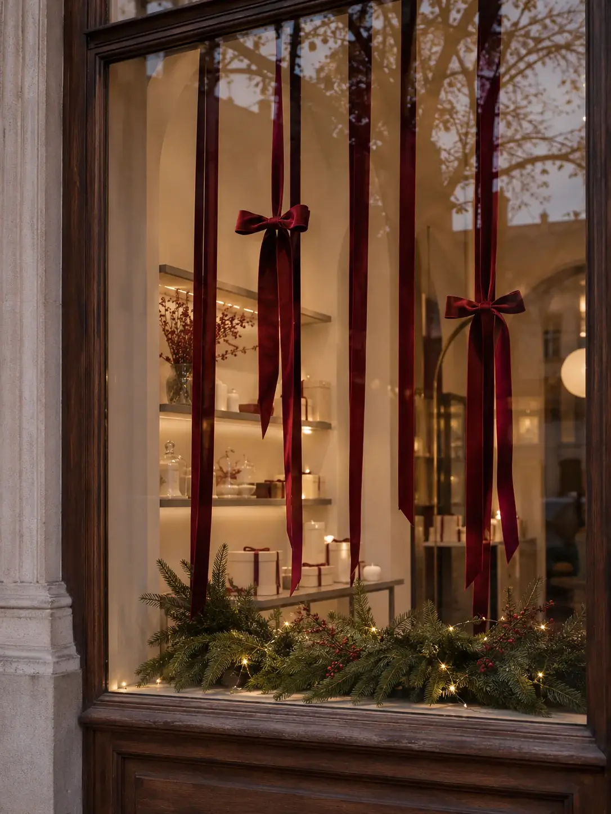

← К галерееВитрины
Зимняя витрина со свечами
Высокие свечи, тонкие бордовые ленты и хвоя вытягивают композицию по вертикали. Между элементами остаётся достаточно воздуха, чтобы витрина читалась и с улицы, и изнутри.

Обсудить этот пример